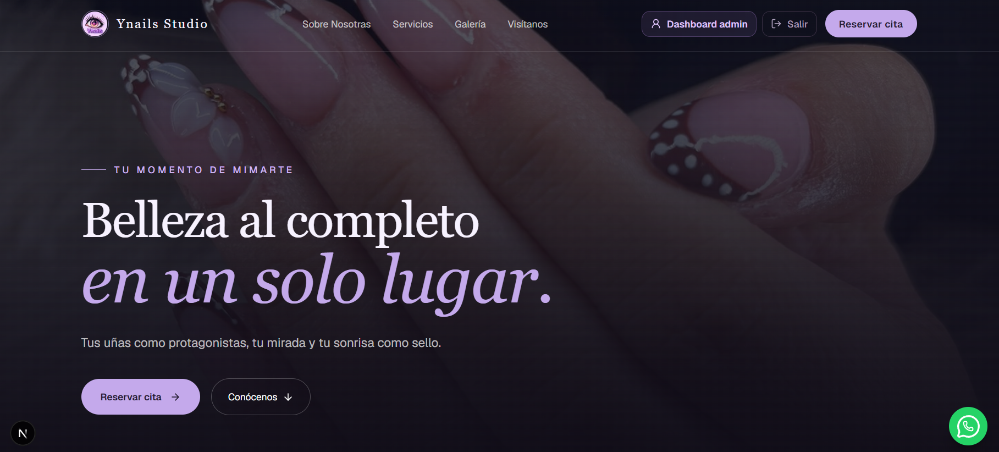

Junior Frontend Developer focused on building responsive, accessible and user-friendly web applications
with React and TypeScript. I enjoy turning ideas into practical digital experiences and I'm open to
junior opportunities and freelance projects.
Two complete web projects with deployed interfaces and production-minded implementations.

yNails
Business Website · Next.js
A beauty business website presenting the studio, services and customer-focused web experience. The interface uses Next.js and TypeScript with responsive Tailwind CSS styling.
A full-stack Kanban project and task management application. React and Zustand power the SPA interface, while an Express REST API provides JWT authentication, Zod validation and MongoDB persistence.